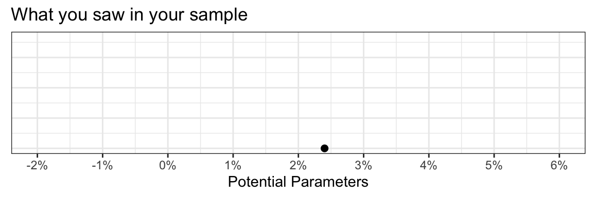
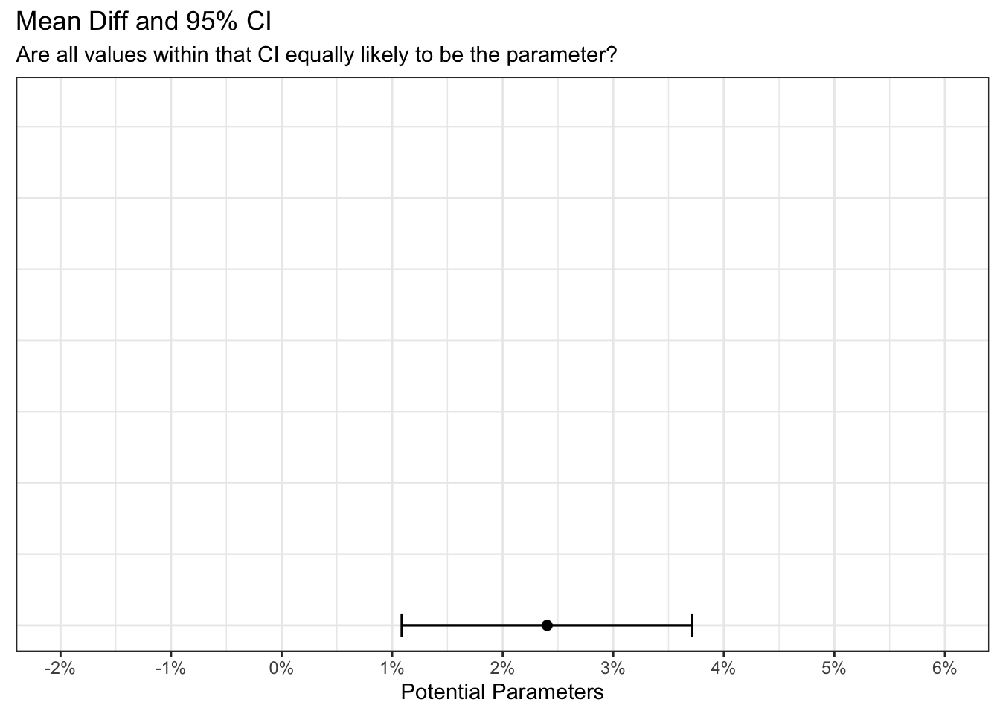
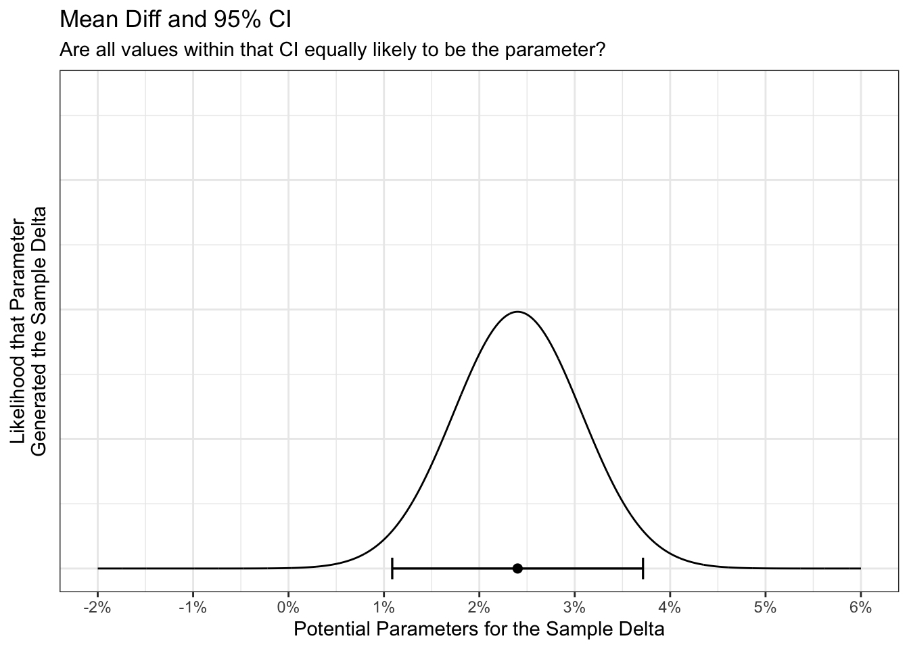
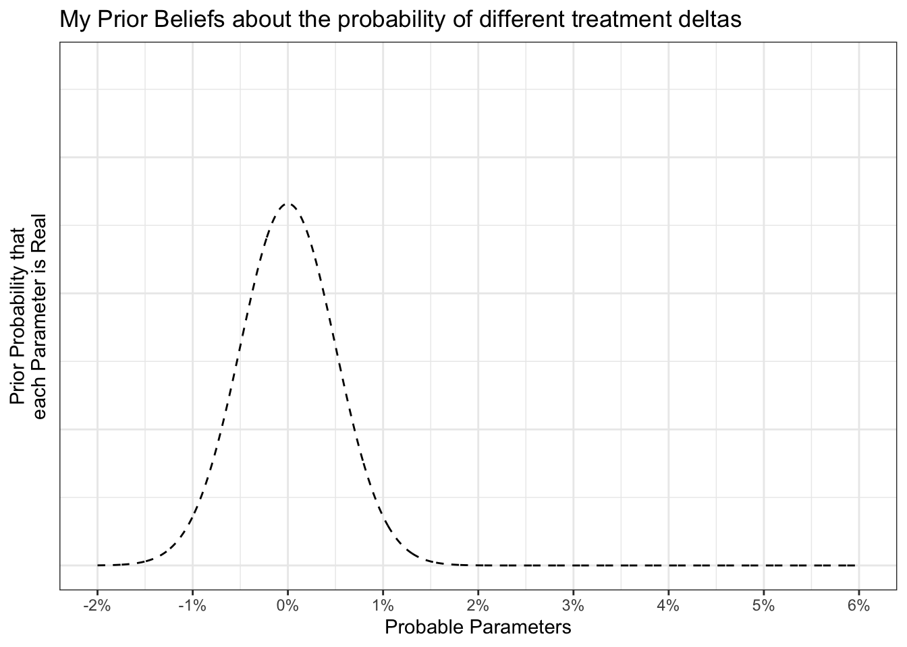
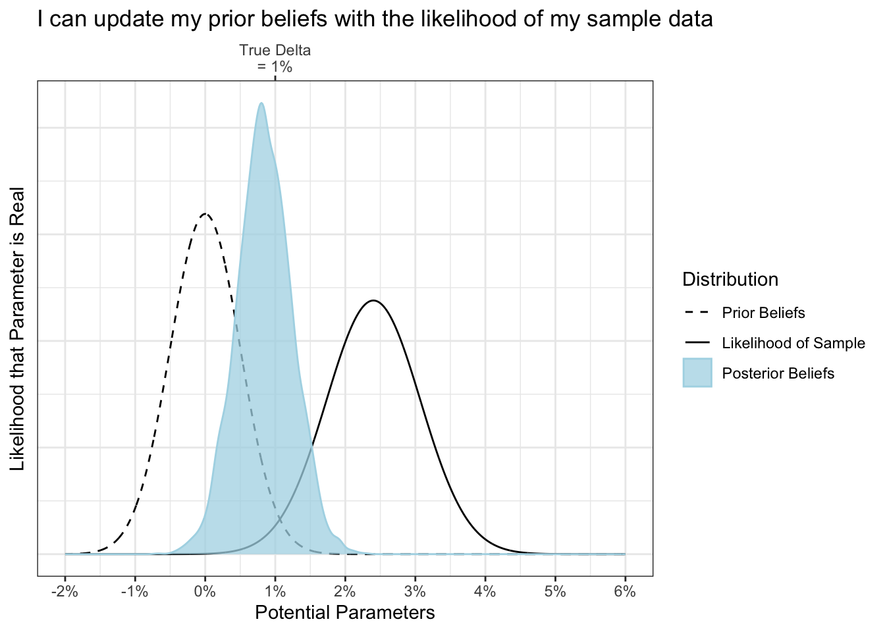

pacman::p_load(tidyverse, knitr, gt, scales, glue, brms, conflicted)
conflicts_prefer(dplyr::filter)
conflicts_prefer(dplyr::lag)
conflicts_prefer(brms::ar)
conflicts_prefer(scales::col_factor)
conflicts_prefer(scales::discard)
theme_set(theme_bw())
lor_to_prob <- function(lor){exp(lor) / (1+exp(lor))}
prob_to_lor <- function(prob){log(prob / (1-prob))}TL;DR:
Bayes Rule: \(Posterior\ Probability \propto Likelihood\ *\ Prior\ Probability\)
The Likelihood expresses the likelihood of different parameters for your sample of data.
The Prior Probability express your prior beliefs about the probability that each of those parameters could be truly present.
The Prior Probability is then conditioned on (AKA averaged with) the Likelihood of the Data to express your updated beliefs as a Posterior Probability distribution.
set.seed(5)
SIMS <- 1
POST_SIMS <- 4e3
RATE_A <- .65
RATE_B <- .66
TRIALS <- 10e3
recipes <- c("A", "B")
legend_levels <- c("Prior Beliefs", "Likelihood of Sample", "Posterior Beliefs")
df <-
tibble(
recipe = recipes,
trials = rpois(length(recipes), TRIALS),
theta = c(RATE_A, RATE_B)
) |>
rowwise() |>
mutate(events = rbinom(n=SIMS, size=trials, prob=theta)) |>
ungroup() |>
mutate(
rate = events/trials,
b_dtc = rate - lag(rate),
b_itc = rate/lag(rate))
gt::gt(df) %>%
fmt_number(
columns = c(rate, b_dtc, b_itc),
decimals = 3
)| recipe | trials | theta | events | rate | b_dtc | b_itc |
|---|---|---|---|---|---|---|
| A | 9915 | 0.65 | 6455 | 0.651 | NA | NA |
| B | 9943 | 0.66 | 6712 | 0.675 | 0.024 | 1.037 |
X_LIMS <- c(-0.02,.06)
Y_LIMS <- c(0, 110)
p_pt <-
df |>
ggplot() +
geom_point(aes(x=b_dtc, y=0), size=2) +
# geom_label(aes(label = percent(df$b_dtc[[2]], .1))) +
coord_cartesian(xlim = X_LIMS, ylim = Y_LIMS) +
labs(x = "Potential Parameters", title = "What you saw in your sample") +
scale_x_continuous(
breaks = seq(-1,1,.01),
labels = percent
) +
labs(y = NULL) +
theme(axis.ticks.y = element_blank(), axis.text.y = element_blank())
p_pt
What reality generated my sample?
Let’s generate a 95% CI because 95% of CIs will contain the true parameter… which should sound worryingly different than what you practically want but what the hell, let’s see it.
p_se <- p_pt +
geom_errorbarh(aes(y=0, xmin = ci_95[[1]], xmax = ci_95[[2]]), height=5) +
labs(
x = "Potential Parameters",
title = "Mean Diff and 95% CI",
subtitle = "Are all values within that CI equally likely to be the parameter?") +
labs(y = NULL) +
theme(axis.ticks.y = element_blank(), axis.text.y = element_blank())
p_se
How often would each potential reality generate my sample?
df_dtc_lik <-
tibble(
x = seq(X_LIMS[[1]], X_LIMS[[2]], length.out = POST_SIMS),
y = dnorm(x = B_DTC, mean = x, sd = SE_diff),
dist = "Likelihood of Sample"
)
p_se +
geom_line(data=df_dtc_lik , aes(x=x, y=y)) +
labs(
x = "Potential Parameters for the Sample Delta",
y = "Likelihood that Parameter\nGenerated the Sample Delta"
)
Do you believe that the tails of your 95% CI (1.1% vs 3.7%) are equally likely to be the parameter?” Of course not, in most business settings, an effect of 1.1% is 100x more likely to be true than an effect of 3.7%. So we need to incorporate this knowledge into the model that expresses our beliefs.
# Express your prior beliefs
PRIOR_MU_INTERCEPT <- 0.64
PRIOR_SD_INTERCEPT <- 0.025
PRIOR_SD_DTC <- 0.005df_prior_cont <- tibble(
x = seq(-.02, .06, length.out = POST_SIMS),
y = dnorm(x, mean=0, sd=PRIOR_SD_DTC),
dist = "Prior Beliefs"
)
p_prior <-
df_prior_cont |>
ggplot(aes(x=x, y=y)) +
geom_line(linetype = 'dashed') +
scale_x_continuous(
breaks = seq(-1,1,.01),
labels = percent
) +
coord_cartesian(xlim=X_LIMS, ylim = Y_LIMS) +
labs(title = "My Prior Beliefs about the probability of different treatment deltas",
x = "Probable Parameters",
y = "Prior Probability that\neach Parameter is Real"
) +
theme(axis.ticks.y = element_blank(), axis.text.y = element_blank())
p_prior
p_prior_pt <-
p_prior +
geom_point(data=df, aes(x=b_dtc, y=0), size=2) +
theme(axis.ticks.y = element_blank(), axis.text.y = element_blank())
p_prior_ptmy_formula <- "events | trials(trials) ~ 0 + Intercept + recipe"
get_prior(
my_formula,
family = binomial,
data = df
) prior class coef group resp dpar nlpar lb ub source
(flat) b default
(flat) b Intercept (vectorized)
(flat) b recipeB (vectorized)# Convert prior probabilities to log-odds ratios for logistic regression
PRIOR_MU_INTERCEPT_LOR <- prob_to_lor(PRIOR_MU_INTERCEPT)
PRIOR_SD_INTERCEPT_LOR <- prob_to_lor(PRIOR_MU_INTERCEPT + PRIOR_SD_INTERCEPT) - prob_to_lor(PRIOR_MU_INTERCEPT)
PRIOR_SD_DTC_LOR <- prob_to_lor(PRIOR_MU_INTERCEPT + PRIOR_SD_DTC) - prob_to_lor(PRIOR_MU_INTERCEPT)
my_priors <-
prior(normal(PRIOR_MU_INTERCEPT_LOR, PRIOR_SD_INTERCEPT_LOR), class = b, coef = Intercept) +
prior(normal(0, PRIOR_SD_DTC_LOR), class = b, coef = recipeB)
my_stanvars <- c(
stanvar(PRIOR_MU_INTERCEPT_LOR, name = "PRIOR_MU_INTERCEPT_LOR"),
stanvar(PRIOR_SD_INTERCEPT_LOR, name = "PRIOR_SD_INTERCEPT_LOR"),
stanvar(PRIOR_SD_DTC_LOR, name = "PRIOR_SD_DTC_LOR")
)
fit_informed <- brm(
formula = my_formula,
data = df,
family = binomial,
prior = my_priors,
stanvars = my_stanvars,
cores = 4,
seed = 44,
file = 'fits/fit_informed.rds'
)draws_informed <- as_draws_df(fit_informed)
head(draws_informed)# A draws_df: 6 iterations, 1 chains, and 4 variables
b_Intercept b_recipeB lprior lp__
1 0.67 0.029 2.92 -10.2
2 0.62 0.055 0.97 -12.7
3 0.69 0.035 2.41 -11.9
4 0.66 0.029 3.05 -10.0
5 0.66 0.040 2.25 -9.8
6 0.65 0.026 3.26 -10.5
# ... hidden reserved variables {'.chain', '.iteration', '.draw'}df_post_informed <-
draws_informed |>
mutate(
post_dtc = lor_to_prob(b_Intercept + b_recipeB) - lor_to_prob(b_Intercept),
dist = "Posterior Beliefs",
dist = factor(dist, levels = legend_levels)
)
ATE <- median(df_post_informed$post_dtc)
PR_LOSS <- mean(df_post_informed$post_dtc < 0)
MEAN_LOSS_LOSS <- mean(df_post_informed$post_dtc[df_post_informed$post_dtc < 0])
E_LOSS <- PR_LOSS * MEAN_LOSS_LOSSmy_breaks <- RATE_B-RATE_A
my_labels <- glue("True Delta\n= {percent(my_breaks, 1L)}")
my_linetypes <- c("dashed", "solid", "solid")
names(my_linetypes) <- c("Prior Beliefs", "Likelihood of Sample", "Posterior Beliefs")
my_fill <- c("red", "green", "lightblue")
names(my_fill) <- c("Prior Beliefs", "Likelihood of Sample", "Posterior Beliefs")
bind_rows(
df_dtc_lik,
df_prior_cont
) |>
mutate(dist = factor(dist, levels = legend_levels)) |>
ggplot(aes(linetype = dist, fill=dist)) +
geom_line(aes(x=x, y=y)) +
geom_density(data=df_post_informed, aes(x=post_dtc), alpha=.75, color = "lightblue", alpha=.75) +
scale_linetype_manual(values = my_linetypes) +
scale_fill_manual(values = my_fill) +
scale_x_continuous(
breaks = seq(-1,1,.01),
labels = percent,
sec.axis =
dup_axis(
breaks = my_breaks,
labels = my_labels,
name = NULL
)
) +
labs(
title = "I can update my prior beliefs with the likelihood of my sample data",
x = "Potential Parameters", y = "Likelihood that Parameter is Real", fill = "Distribution", linetype = "Distribution") +
theme(axis.ticks.y = element_blank(), axis.text.y = element_blank())
sessionInfo()R version 4.4.0 (2024-04-24)
Platform: x86_64-apple-darwin20
Running under: macOS Big Sur 11.7.10
Matrix products: default
BLAS: /Library/Frameworks/R.framework/Versions/4.4-x86_64/Resources/lib/libRblas.0.dylib
LAPACK: /Library/Frameworks/R.framework/Versions/4.4-x86_64/Resources/lib/libRlapack.dylib; LAPACK version 3.12.0
locale:
[1] en_US.UTF-8/en_US.UTF-8/en_US.UTF-8/C/en_US.UTF-8/en_US.UTF-8
time zone: America/Los_Angeles
tzcode source: internal
attached base packages:
[1] stats graphics grDevices utils datasets methods base
other attached packages:
[1] conflicted_1.2.0 brms_2.21.0 Rcpp_1.0.12 glue_1.8.0
[5] scales_1.3.0 gt_0.10.1 knitr_1.46 lubridate_1.9.3
[9] forcats_1.0.0 purrr_1.0.2 readr_2.1.5 tidyr_1.3.1
[13] tibble_3.2.1 ggplot2_3.5.1 tidyverse_2.0.0 dplyr_1.1.4
[17] stringr_1.5.1
loaded via a namespace (and not attached):
[1] tidyselect_1.2.1 farver_2.1.2 loo_2.7.0
[4] fastmap_1.2.0 tensorA_0.36.2.1 pacman_0.5.1
[7] digest_0.6.35 timechange_0.3.0 lifecycle_1.0.4
[10] StanHeaders_2.32.8 magrittr_2.0.3 posterior_1.5.0
[13] compiler_4.4.0 rlang_1.1.3 sass_0.4.9
[16] tools_4.4.0 utf8_1.2.4 yaml_2.3.8
[19] labeling_0.4.3 bridgesampling_1.1-2 htmlwidgets_1.6.4
[22] pkgbuild_1.4.4 curl_5.2.1 xml2_1.3.6
[25] abind_1.4-5 withr_3.0.0 grid_4.4.0
[28] stats4_4.4.0 fansi_1.0.6 colorspace_2.1-0
[31] inline_0.3.19 cli_3.6.3 mvtnorm_1.2-5
[34] rmarkdown_2.27 ragg_1.3.2 generics_0.1.3
[37] RcppParallel_5.1.7 rstudioapi_0.16.0 tzdb_0.4.0
[40] cachem_1.1.0 rstan_2.32.6 bayesplot_1.11.1
[43] parallel_4.4.0 matrixStats_1.3.0 vctrs_0.6.5
[46] V8_4.4.2 Matrix_1.7-0 jsonlite_1.8.8
[49] hms_1.1.3 systemfonts_1.1.0 codetools_0.2-20
[52] distributional_0.4.0 stringi_1.8.4 gtable_0.3.5
[55] QuickJSR_1.1.3 munsell_0.5.1 pillar_1.9.0
[58] htmltools_0.5.8.1 Brobdingnag_1.2-9 R6_2.5.1
[61] textshaping_0.4.0 evaluate_0.23 lattice_0.22-6
[64] backports_1.5.0 memoise_2.0.1 rstantools_2.4.0
[67] coda_0.19-4.1 gridExtra_2.3 nlme_3.1-164
[70] checkmate_2.3.1 xfun_0.44 pkgconfig_2.0.3